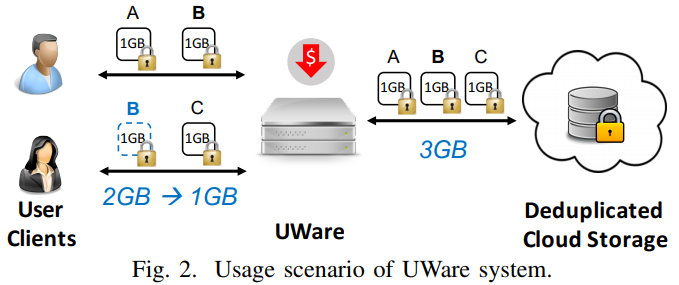
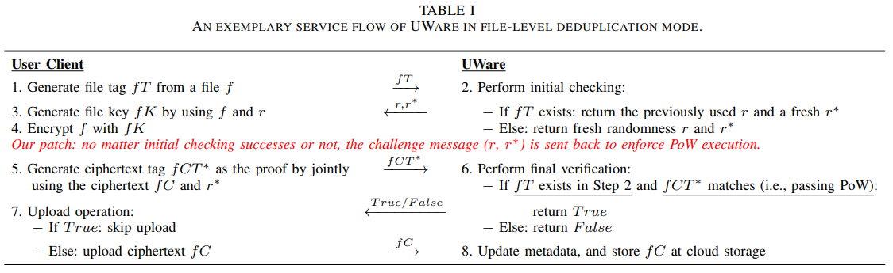

Existing client-side deduplication designs are not directly accplicable to build a secure deduplication middleware.
they are inherently vulnerable to the ownership cheating attacks (hash-only attacks).
An overlooked side-channel in client-side deduplication
the PoW can be abused to turn the deduplication server into an oracle, allowing an attacker to learn the file existence by observing whether or not the PoW testing is performed.
Tradeoff among various deduplication modes
The contradiction between file- and block- level deduplication approaches urges a solution that acquires an acceptable deduplication ratio while alleviating performance issues.
This paper wants to solve those two issues above.
leverage the similarity characteristic of file blocks in secure deduplication.
UWare
System overview

UWare will perform secure deduplication services at** the gateway of enterprise-level networks**.
client is installed at a local device, encrypt and upload files to backend storage
Storage backend stores all user's data
UWare indexes short information of encrypted file/blocks of all users for efficiency.
Threats
A malicious user
attemp to launch the ownership cheating attacks or the existence-of-file attacks by using some short information.
A compromised cloud storage server
attemp to steal and learn the underlying content of the stored file ciphertexts.
Overlooked side-channel in deployment if their PoW protocols
An attacker who has a file hash can know if it exists without having to complete the PoW testing.
Existing deduplication design perform the PoW testing after the duplicate checking passes.
A promising solution: make the file existence oblivious unless the user passes the PoW testing.

Key idea: no matter initial checking successes or not, the challenge message is sent back to enforce PoW execution.
The user who just holds a file hash is still requested to upload the corresponding file ciphertext as she cannot compute the correct proof.
Performance issues on memory space and bandwidth for block-level deduplication
This paper elaborates a tunable design to balance the deduplication performance and system efficiency for secure deduplication.
using near-exact deduplication (Broder's theorem), a small group of sampled block tags can approximately represent the entire block tags of the file.
Per-file randomness design
Each file regardless of how many blocks it has, will be assigned a single randomness for the key generation.
assign the same randomness of the most similiar file in UWare.
Implementation and Evaluation
Evaluation
Dataset: FSLHome-2014, 564GB
Deduplication effectiveness
Compared with plaintext deduplication
Index space overhead
Compared with plaintext deduplication
Service overhead
The time overhead of tag generation and data encryption.
2. Strength (Contributions of the paper)
This paper patches the PoW protocol to address the aforementioned file-existence side-channel under both threats.
3. Weakness (Limitations of the paper)
The key drawback of its method is it needs to do the encryption whether the file exists or not.
4. Future Works
This paper assumes the ciphertexts of unpredictable message cannot be distinguished by an efficient attacker except with negligible probability.
This paper argues that near-exact deduplication can achieve lower memory cost at a cost of decreasing deduplication ratio.